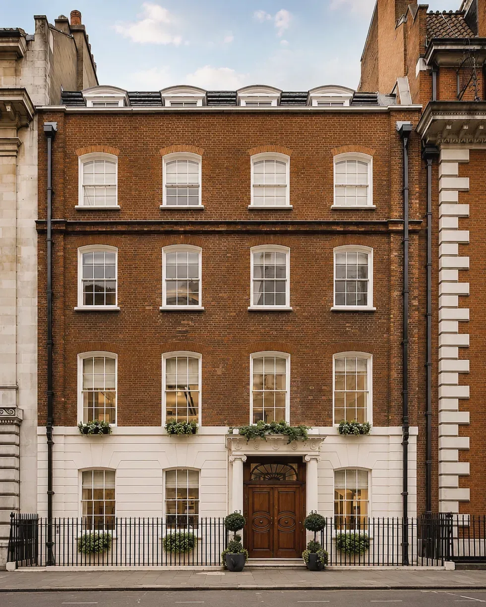

1マンデート
目的
投資家の目的を、明確な取得マンデートとして整理します。
成果物
投資マンデート
- 投資家の承認
- マンデートと意思決定の枠組み
各案件の進め方と、各段階で投資家が承認する事項。
投資家の目的を、明確な取得マンデートとして整理します。
投資マンデート
案件をマンデートに照らして絞り込みます。
投資メモランダム
コミット前に、保有・調達・税務のストラクチャーを調整します。
ストラクチャーと実行計画
一つの計画のもとで、デューデリジェンス・調達・契約を完了します。
取得判断資料
実績と環境の変化に照らして、投資判断の前提を継続的に検証します。
資産のモニタリング、報告、意思決定の支援
借換え、一部売却、または売却をマンデートに照らして評価します。
売却に関する提案と実行計画
重要な判断は、一貫して投資家に留保されます。
順序ではなく、同時に検討します。どの検証も、判断そのものに代わるものではありません。
五つの検証を併せて検討したうえで、案件を先に進めます。
その機会は、投資家の目的・制約・保有要件に適合しているか。
需要・流動性・規制は、想定する戦略を支えているか。
建物・収益・必要資本は、十分に理解され説明可能か。
市場の追い風に頼らずとも、リターンは許容水準にとどまるか。
事業計画を実行・管理し、最終的に投資を回収できるか。
